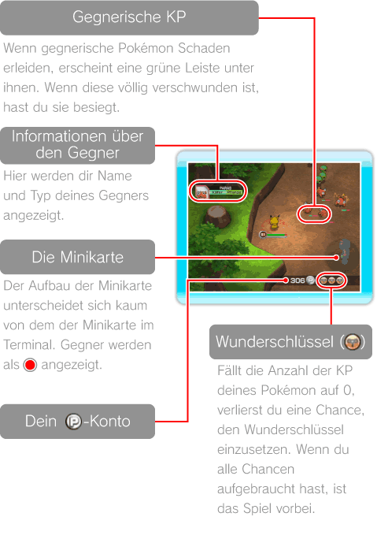
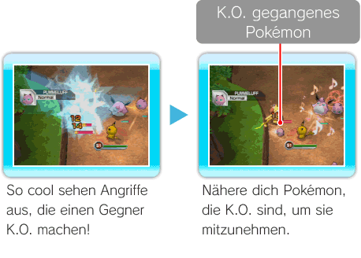
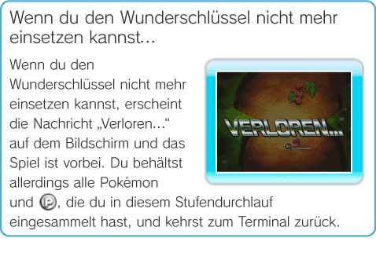
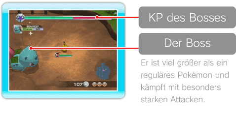
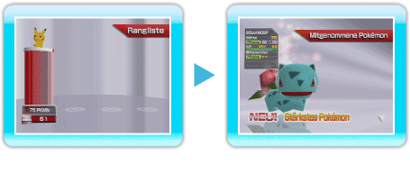

13 |
Die Stufen |
 |
|
Der Aufbau des Bildschirms in den Stufen Zusätzlich zur Minikarte und der Anzeige deines

Ziel und Spielregeln in den Stufen Kämpfe gegen Gegner und bahne dir deinen Weg nach vorne. Jede Stufe setzt sich aus mehreren Abschnitten zusammen. Wenn du auf das Sprungkissen am Ende eines Abschnitts hüpfst, wirst du in den nächsten Abschnitt katapultiert. Im letzten Abschnitt jeder Stufe wartet ein Boss auf dich. Besiegst du ihn, hast du die Stufe geschafft. Hast du erst einmal einen neuen Abschnitt erreicht, gibt es kein Zurück mehr! Wenn du über die Option ZUM TERMINAL im Pausenmenü (siehe S. 16: Das Pausenmenü) ins Terminal zurückkehrst, verlierst du alle Pokémon und
Gewinne neue Teammitglieder, indem du Gegner K.O. gehen lässt Manchmal geht ein Gegner, den du besiegt hast, K.O. und bleibt auf dem Boden liegen. Wenn du solch ein Pokémon mit deiner Spielfigur berührst, schließt es sich deinem Team an. Über das Ablösemenü (siehe S. 11: Das Ablösemenü) kannst du deine Spielfigur jederzeit mit einem Pokémon, das du in dein Team aufgenommen hast, ablösen. In einer Mehrspielerpartie (siehe S. 18: Terminaleinrichtungen für Mehrspielerpartien) kannst du dein Pokémon allerdings bis zur Beendigung der jeweiligen Stufe nur mit solchen Pokémon ablösen, die du auch selbst aus dieser Stufe mitgenommen hast. Wenn du ein gegnerisches Pokémon mit einer besonders wuchtvollen Attacke erschüttert hast (siehe S. 15: Wucht), geht es leichter K.O.
Hinweis: Pokémon, die K.O. gegangen sind, verschwinden nach einer gewissen Zeit von der Karte.

Pokémon ablösen Wenn du das Pokémon, das du gerade steuerst, mit einem anderen ablösen willst, drücke Wenn du dein Pokémon mit einem anderen ablöst, bevor seine KP auf 0 fallen, kannst du weiterspielen, ohne eine Chance zu verlieren, den Wunderschlüssel einzusetzen. Während das Ablösemenü geöffnet ist, geht das Spiel übrigens weiter! Es kann also passieren, dass dein Pokémon Schaden erleidet, während du dich im Menü befindest. Geschieht dies, wird das Ablösemanöver abgebrochen. Sei also auf der Hut!
KP und Wunderschlüssel Du hast drei Chancen, den Wunderschlüssel (
Hinweis: Fallen die KP eines Pokémon auf 0, kannst du es erst wieder einsetzen, wenn du zum Terminal zurückgekehrt bist.
Bei Mehrspielerpartien besitzt zwar jeder Spieler seine eigene KP-Leiste, aber alle Mitstreiter teilen sich zusammen drei Chancen, den Wunderschlüssel einzusetzen. Fallen die KP deines Pokémon auf 0 und befinden sich in deinem Team keine weiteren Spielfiguren mehr, mit denen du es ablösen könntest, ist das Spiel vorbei, egal wie viele Chancen du noch hast, den Wunderschlüssel einzusetzen.
 Über die Bosskämpfe Im letzten Abschnitt jeder Stufe wartet ein Boss auf dich. Wenn du den Boss besiegst und all seine KP (die grüne Leiste) aufgebraucht sind, erscheint ein Sprungkissen. Springst du darauf, hast du die Stufe geschafft! Es kann auch vorkommen, dass sogar ein Boss K.O. geht und du ihn in dein Team aufnehmen kannst, wenn du ihn besiegt hast!  Der Stufenabschlussbildschirm Hast du eine Stufe geschafft, erhältst du sowohl eine Übersicht darüber, wie viele Gegner jeder der teilnehmenden Spieler besiegt hat, als auch darüber, wie viele Pokémon du bei diesem Durchgang neu in dein Team aufnehmen konntest. Die Spielfigur, die auf dem Stufenabschlussbildschirm das Prädikat „Stärkstes Pokémon“ erhält, besitzt in deinem Team die größte Stärke. Pokémon, die als „neu“ bezeichnet werden, waren bisher noch nicht in deinem Team vertreten.  |
 , um das Ablösemenü zu öffnen und wähle aus der Pokémonliste ein neues aus.
, um das Ablösemenü zu öffnen und wähle aus der Pokémonliste ein neues aus. |
 |
 |